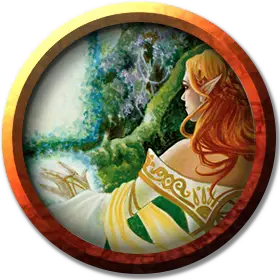

Очарователь
Enchanter
Средний Гуманоид (Любая раса), любое мировоззрение

Класс Доспеха 12 (15 с доспехами мага)
Хиты 40 (9к8)
Скорость 30 футов
| мод | спас | ||
|---|---|---|---|
| СИЛ | 9 | −1 | −1 |
| ЛОВ | 14 | +2 | +2 |
| ТЕЛ | 11 | +0 | +0 |
| мод | спас | ||
|---|---|---|---|
| ИНТ | 17 | +3 | +6 |
| МДР | 12 | +1 | +4 |
| ХАР | 11 | +0 | +0 |
Навыки История +6, Магия +6
Чувства пассивное Восприятие 11
Языки любые четыре языка
Опасность 5 (1800 опыта)
Бонус мастерства +3
Среда обитания Город
Особенности
Использование заклинаний. . Очарователь является заклинателем 9-го уровня. Его базовой характеристикой является Интеллект (Сл спасброска от заклинания 14, +6 к попаданию атаками заклинаниями). У него подготовлены следующие заклинания волшебника:
• Заговоры (неограниченно): дружба [friends], волшебная рука [mage hand], починка [mending], сообщение [message].
• 1 уровень (4 ячейки): очарование личности [charm person],* доспехи мага [mage armor], волшебная стрела [magic missile].
• 2 уровень (3 ячейки): удержание личности [hold person], невидимость [invisibility], внушение [suggestion].
• 3 уровень (3 ячейки): огненный шар [fireball], ускорение [haste], языки [tongues].
• 4 уровень (3 ячейки): подчинение зверя [dominate beast],* каменная кожа [stoneskin].
• 5 уровень (2 ячейки): удержание чудовища [hold monster]*.
*Заклинание Очарования уровня 1 или выше.
Действия
Боевой посох. . Рукопашная атака оружием: +2 к попаданию, досягаемость 5 футов, одна цель. Попадание: Дробящий урон 2 (1к6 – 1) или дробящий урон 3 (1к8–1) если используется двумя руками.
Реакции
Инстинктивное очарование. (Перезаряжается после накладывания Очарователем заклинания школы Очарования уровня 1 и выше). Очарователь пытается магией перенаправить атаку, совершаемую против него существом, которое находится в пределах 30 футов от него и которое он видит. Очарователь обязан решить, будете ли использовать это умение, до того как будет известно, попала атака или промахнулась.
Атакующий должен совершить спасбросок Мудрости Сл 14. При провале атакующий должен выбрать в качестве цели ближайшее существо (кроме вас и себя). Если есть несколько потенциальных целей, атакующий сам выбирает из них цель.
Описание
Очарователи – специализированные волшебники, которые понимают, как изменять и управлять мыслями, используя магию. Они могут быть представительными и интересными, используя магию управления людьми только, когда обман и простое убеждение проваливаются, или они могут быть грубыми и требовательными, используя и полагаясь на очарованных, послушных фаворитов.